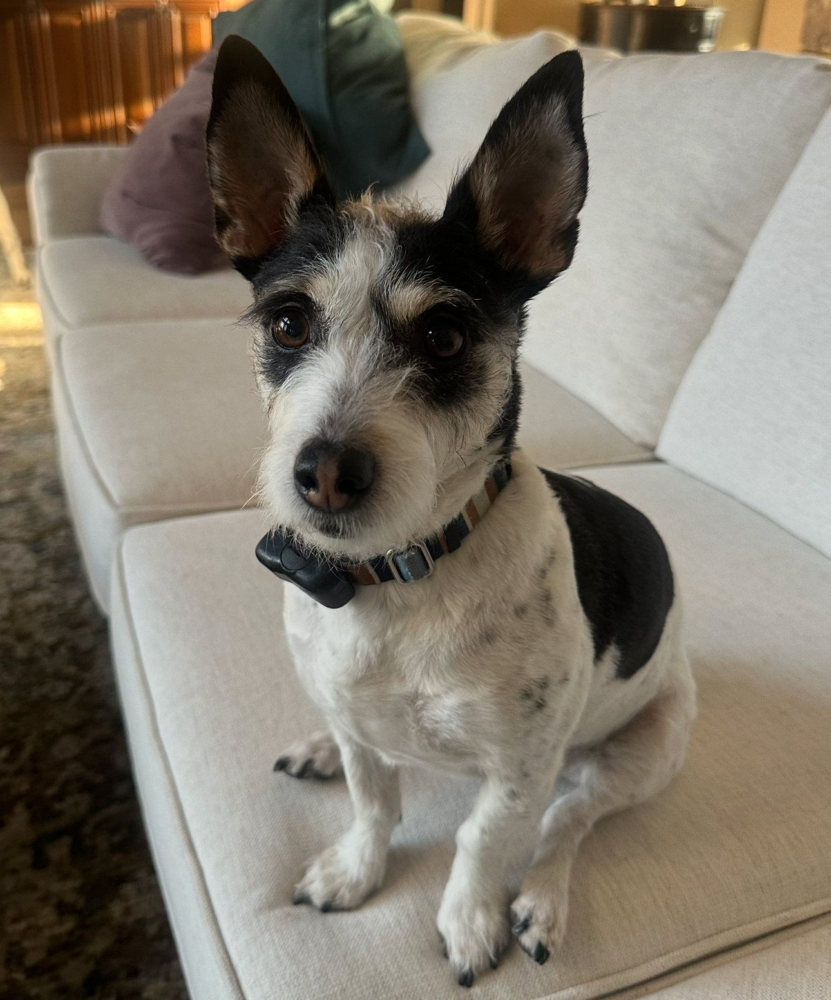

This is Reagan! She is a silly and smaller dog and she can usually be found sitting right next to whoever she finds to be closest in order to get head scratches. Reagan is full of little quirks and we love her dearly for them. For example, when she was a puppy, she tripped on the top step of the stairs to the basement and has since completely refused to walk up that last step. She has no issues with any other staircase but still refuses to touch that last step. It has happened several times where we notice we haven't seen her for a while and come to find her sitting on that second step, waiting for someone to come help her. We love Reagan very much, even with her quirks and lack of social skills with other dogs, including ours. She is so sweet and just wants to love everything.
 Back to My Pets